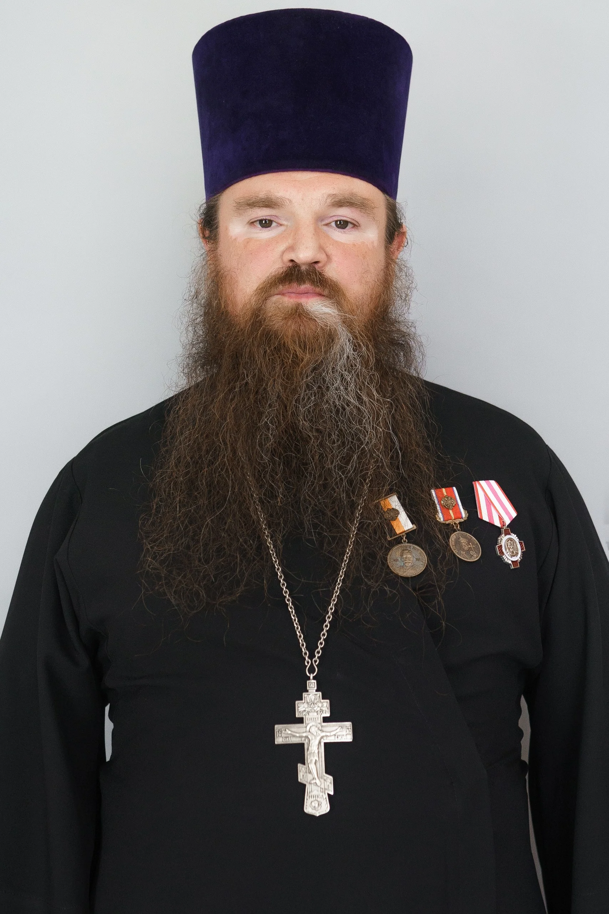

иерей

наукоград Кольцово
Православная община Кольцова была создана в марте 1993 года. Для первых богослужений приспособили существующее здание: первый молебен состоялся 12 сентября 1993 года, первая литургия — 4 декабря, в праздник Введения во храм Пресвятой Богородицы.
В 1996 году прежнее здание реконструировали. В 1999 году началось строительство нового каменного храма по проекту архитектора Ирины Руденко. Епархиальная архивная справка также сообщает об открытии воскресной школы в феврале 1996 года.
Протоиерей Александр Николаев — настоятель.
Приходское расписание: оригинал
Расписание подтверждено по 11 октября 2026 года.
Приход в честь Введения во храм Пресвятой Богородицы
Приход в честь Введения во храм Пресвятой Богородицы
Приход в честь Введения во храм Пресвятой Богородицы
Приход в честь Введения во храм Пресвятой Богородицы
Приход в честь Введения во храм Пресвятой Богородицы
Приход в честь Введения во храм Пресвятой Богородицы, Новосибирская область, рабочий посёлок Кольцово, 17А
Приход в честь Введения во храм Пресвятой Богородицы, Новосибирская область, рабочий посёлок Кольцово, 17А
После утреннего богослужения; точное время уточняется.
Приход в честь Введения во храм Пресвятой Богородицы · наукоград Кольцово
Встречи для тех, кому интересны церковная словесность и осмысленное чтение.
Интересующиеся церковной словесностью
О встречах и участииПриход в честь Введения во храм Пресвятой Богородицы · наукоград Кольцово
Совместное знакомство со Священным Писанием и обсуждение вопросов веры.
Интересующиеся Священным Писанием
О встречах и участииПриход в честь Введения во храм Пресвятой Богородицы · наукоград Кольцово
Занятия для детей и взрослых при Введенском храме Кольцово.
Дети и взрослые
О встречах и участииПриход в честь Введения во храм Пресвятой Богородицы · наукоград Кольцово
Приходские встречи для знакомства, общения и участия в жизни Церкви.
Молодёжь; возрастные границы уточняются
О встречах и участииПриход в честь Введения во храм Пресвятой Богородицы · наукоград Кольцово
Встречи для подготовки к Таинству Крещения и обсуждения вопросов веры.
Готовящиеся к Крещению и их близкие
О встречах и участииНовости прихода можно найти в общей ленте.